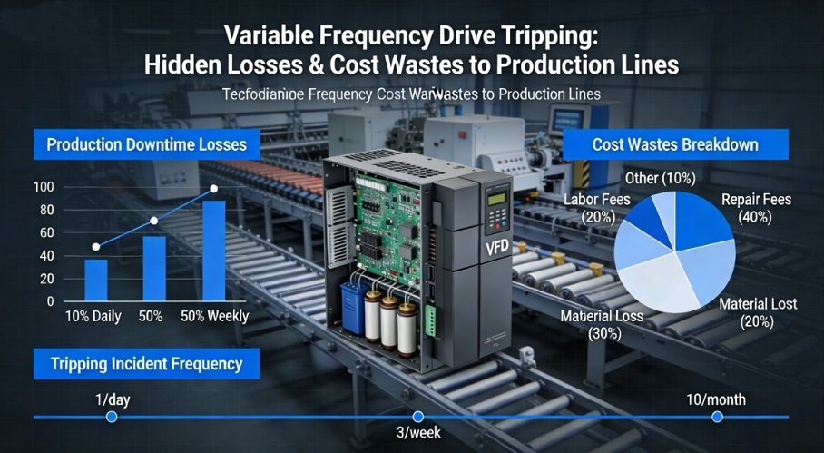
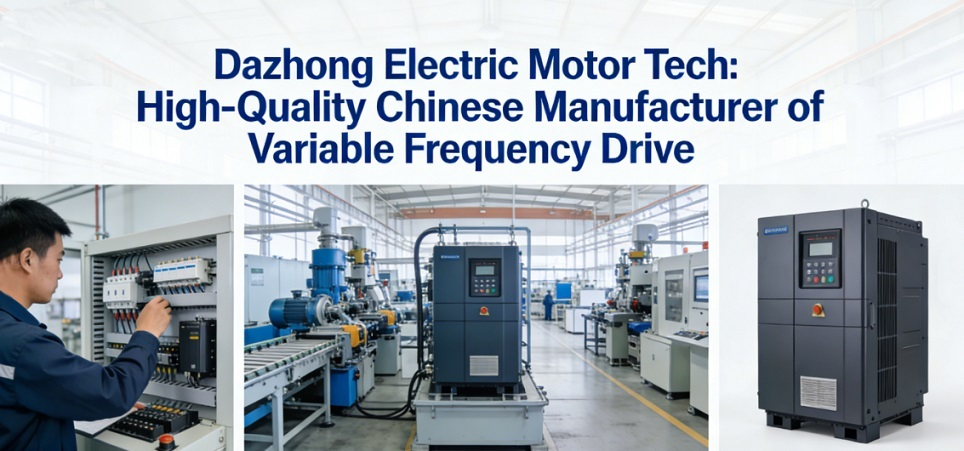
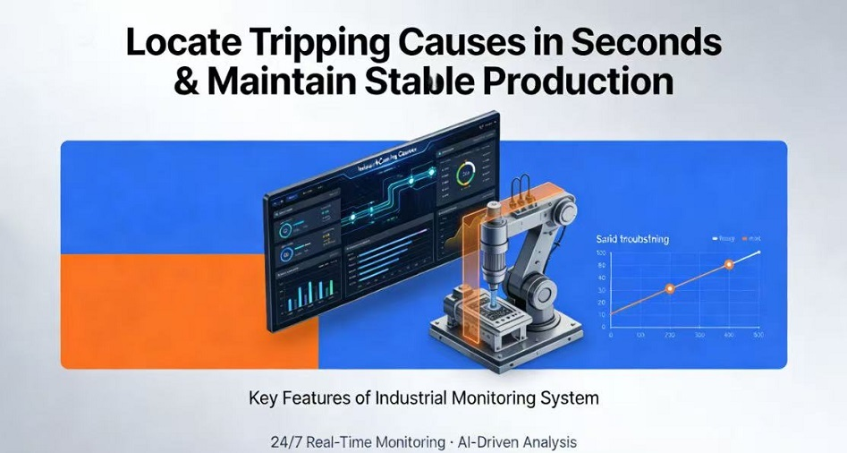
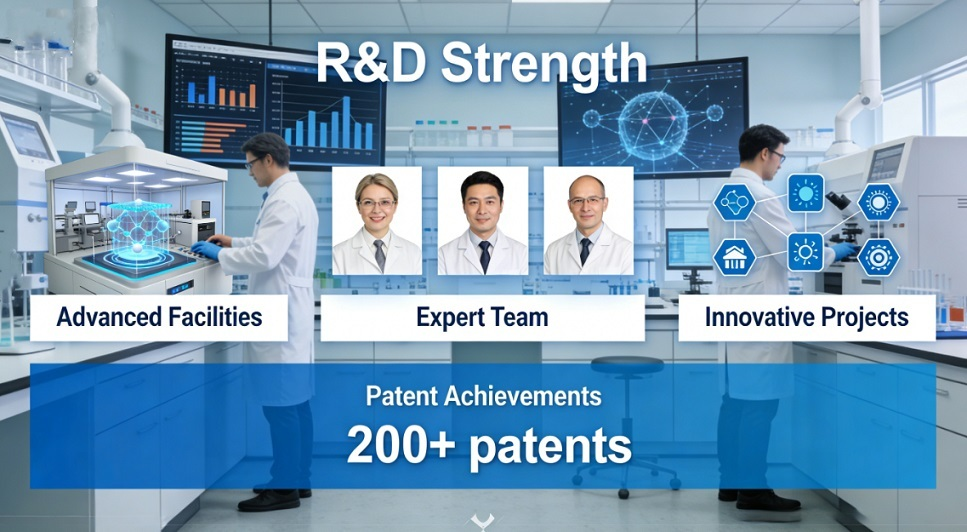

Русский
отраслевые новости

Сбои частотного преобразователя? Dazhong решает быстро, производство не останавливается
Частые отключения (сбои) частотных преобразователей на производственных линиях — один из самых распространённых рисков простоев в производстве, а также ключевая проблема, ограничивающая производительность и повышающая эксплуатационные и ремонтные расходы. Как опытный китайский поставщик и профессиональный производитель в сфере промышленного приводного оборудования, компания Dazhong Electric Motor Tech предлагает высококачественные частотные преобразователи, поддерживаемые быстрой диагностикой неисправностей и полным спектром услуг. Мы решаем проблемы с отключениями ЧП за счёт оперативного выездного устранения неполадок: определяем причины за секунды и выполняем ремонт без остановки производства. Благодаря ориентированной на энергоэффективность конструкции и гибкой персонализированной производству мы стали надёжным глобальным партнёром для клиентов по всему миру, обеспечивая эффективное промышленное производство благодаря китайскому интеллектуальному производству.

I. Сбои частотного преобразователя: скрытые потери и нерациональные расходы для производственных линий
В промышленном производстве частотный преобразователь (ЧП) является ключевым элементом для регулирования скорости двигателя и энергосберегающего управления, широко применяется в вентиляторах, насосах, станках, горном оборудовании, системах вентиляции и кондиционирования, автоматизированных производственных линиях и во многих других областях.
Частые отключения ЧП давно беспокоят предприятия, принося гораздо больше потерь, чем временный простой, с множеством скрытых расходов.
1. Основные причины сбоев частотного преобразователя
Отключения могут быть вызваны шестью распространёнными факторами: перегрузка, перенапряжение/недонапряжение, плохая теплоотдача, несоответствие параметров, колебания нагрузки и неисправность цепи.
2. Последствия частых отключений
Эти проблемы напрямую влияют на работу бизнеса и производство:
Внезапное отключение снижает производительность, задерживает поставку заказов и может привести к огромным экономическим потерям в отраслях с непрерывным производством;
Повторяющиеся отключения ускоряют старение двигателей и внутренних компонентов ЧП, сокращают срок службы, увеличивают расходы на замену и вовлекают пользователей в цикл «неисправность — ремонт — новая неисправность»;
Традиционное устранение неполадок сильно зависит от опыта персонала, является трудоёмким и неэффективным: часто требуются часы или даже дни для поиска первопричины, что приводит к высоким эксплуатационным и ремонтным расходам;
Частые пуски и остановки увеличивают потребление энергии, противоречат целям предприятий по снижению затрат, энергосбережению и низкоуглеродному производству, а также снижают энергосберегающую ценность самого частотного преобразователя.

II. Dazhong Electric Motor Tech: высококачественный китайский производитель частотных преобразователей
Сталкиваясь с промышленной проблемой частых отключений ЧП, компания Dazhong Electric Motor Tech как профессиональный китайский производитель специализируется на научно-исследовательских разработках, производстве, продаже и услугах полного жизненного цикла частотных преобразователей.
Ориентируясь на принципы «высокое качество, высокая стабильность и высокая энергоэффективность», мы разрабатываем решения на основе частотных преобразователей для глобальных промышленных потребностей и доказываем надёжность китайских преобразователей за счёт сильного потенциала.
1. Научно-исследовательский потенциал
У нас есть профессиональная команда НИОКР, занимающаяся модернизацией технологий частотного регулирования, оптимизацией алгоритмов векторного управления, повышением помехозащищённости, снижением рисков отключений на этапе проектирования и адаптацией к сложным рабочим условиям.
2. Ассортимент продукции
Наша продукция охватывает полный диапазон мощностей от 0,75 кВт до 630 кВт, подходит для стандартных напряжений 380 В/690 В, удовлетворяет потребности различных отраслей и типов нагрузок, обладая высокой универсальностью и совместимостью.
3. Контроль качества
Вся продукция проходит полные испытания на старение, высоко- и низкотемпературные испытания, испытания на помехозащищённость и другие проверки надёжности, строго в соответствии с международными промышленными стандартами, и может адаптироваться к суровым промышленным условиям: высокая температура, пыль, влажность.
4. Сертификаты
Наша продукция получила сертификаты системы менеджмента качества ISO 9001, CE и многие другие международные сертификаты, признана глобальными клиентами, что делает нас эталонным высококачественным китайским поставщиком частотных преобразователей.

III. Ключевые преимущества: определение причин отключений за секунды и поддержка стабильного производства
В отличие от традиционной модели «акцент на продажах, пренебрежение услугами», компания Dazhong Electric Motor Tech создала замкнутую систему услуг «быстрая диагностика + быстрый ремонт + профилактика» для частых отключений ЧП, действительно реализуя принцип «быстрое определение, бесперебойное производство и низкая частота повторения неисправностей», избавляя предприятия от забот.
1. Определение неисправностей за секунды
Наши частотные преобразователи оснащены интеллектуальной библиотекой кодов неисправностей и облачной системой дистанционной диагностики. Без разборки оборудования причина отключения определяется за 1 минуту с чётким отображением типа неисправности, исключая слепой ручной осмотр и значительно сокращая время устранения неполадок.
2. Ремонт без остановки и снижение потерь
Для большинства распространённых отказов с отключениями мы предлагаем дистанционную онлайн-наладку. Инженеры подключаются к оборудованию через облако, оптимизируют параметры и устраняют неисправности без остановки, сводя к минимуму перерывы в производстве.
При сложных неисправностях мы обеспечиваем выездной ответ за 48 часов с профессиональными ремонтными инструментами для эффективного решения проблем.
3. Оптимизация по первопричине и низкая частота повторения
После устранения неисправности наши инженеры проводят полный осмотр в соответствии с реальными рабочими условиями: калибровка нагрузки, оптимизация параметров, модернизация системы охлаждения, проверка цепи — чтобы устранить риски отключений на источнике и обеспечить долгосрочную стабильную работу.
4. Обучение эксплуатации и ремонту, самостоятельное устранение неполадок
Мы предоставляем бесплатное обучение эксплуатации и техническому обслуживанию для клиентов, обучаем методам диагностики частых отключений ЧП и навыкам ежедневного обслуживания, помогая клиентам формировать самостоятельный потенциал по эксплуатации и ремонту и дополнительно снижать ремонтные расходы.
IV. Высокоэффективная конструкция: реализация энергосберегающей ценности частотного преобразователя
Частотные преобразователи Dazhong основаны на концепции энергоэффективности как ядра дизайна, идеально сочетая стабильность и энергосбережение, помогая предприятиям сокращать затраты и выбросы углерода, повышать основную конкурентоспособность и идти в ногу с глобальной тенденцией низкоуглеродного производства.
1. Конструкция мягкого пуска
Исключает удар большим током при пуске двигателя, защищает двигатели и преобразователи, снижает нагрузку на электросеть и потребление энергии при пуске.
2. Регулирование скорости по потребности
Автоматически регулирует скорость двигателя в соответствии с реальными рабочими условиями, исключая ненужные потери энергии при постоянной работе на номинальной скорости. Для вентиляторов и насосов энергосбережение достигает 30 –50%, значительно снижая расходы на электроэнергию при длительной эксплуатации.
3. Интеллектуальный мониторинг энергопотребления
Встроенный модуль потребления энергии отображает данные о реальном потреблении электроэнергии, помогая предприятиям контролировать использование энергии и оптимизировать производственные процессы для большего энергосберегающего потенциала.
4. Низкоуглеродная совместимость
Продукция соответствует глобальным стандартам низкоуглеродного производства, поддерживает предприятия в достижении целей по энергосбережению и снижению выбросов углерода, улучшая образ зелёного производства и рыночную конкурентоспособность.

V. Персонализированное производство + глобальные услуги: построение долгосрочного глобального партнёрства
Как профессиональный китайский поставщик частотных преобразователей, компания Dazhong Electric Motor Tech понимает различия производственных условий между отраслями и предприятиями, а единый стандартный продукт не может удовлетворить все потребности. За счёт сильного потенциала персонализированного производства и комплексных услуг мы продолжаем углублять глобальное партнёрство и предоставляем полноцикловую, всестороннюю поддержку клиентам по всему миру.
Персонализированное производство
Мы предоставляем комплексную кастомизацию по требованиям клиентов:
- Кастомизация характеристик: возможность настройки напряжения, мощности, частоты и других основных параметров для соответствия различным двигателям и оборудованию;
- Кастомизация функций: настройка протоколов связи, степени защиты, режимов управления для специальных отраслей, таких как горная промышленность, химия, пищевая промышленность;
- Кастомизация конструкции: возможность настройки размеров и способа монтажа для соответствия монтажному пространству на месте и повышения удобства установки.
Система услуг полного жизненного цикла
Мы создали систему полного жизненного цикла: подбор → монтаж → наладка → эксплуатация и ремонт → модернизация.
- Подбор перед продажей: профессиональные инженеры предоставляют точный подбор частотного преобразователя по рабочим условиям и потребностям нагрузки, исключая отключения или плохой энергосберегающий эффект из-за неправильного подбора;
- Поддержка во время продажи: бесплатное руководство по монтажу и наладке для обеспечения быстрой и стабильной работы оборудования;
- Техническое обслуживание после продажи: глобальная локальная техническая поддержка, онлайн-консультации 7×24 часа, регулярные выездные осмотры, своевременное выявление скрытых опасностей и услуги по модернизации продукции;
- Форматы сотрудничества: мы поддерживаем гибкие форматы: агентство, ODM, проектная кастомизация и другие — для удовлетворения разнообразных глобальных потребностей и построения долгосрочного стабильного глобального партнёрства.
Часто задаваемые вопросы: проблемы с отключениями частотного преобразователя
1.Почему частотный преобразователь отключается сразу после пуска?
Ответ: Обычно это вызвано коротким замыканием, плохим заземлением или неправильными настройками параметров. Специалисты Dazhong определяют точную причину за 1 минуту с помощью дистанционной диагностики, без слепого осмотра.
2.Как решить проблему отключения при перегрузке во время работы?
Ответ: Сначала проверьте, не превышает ли нагрузка номинальный диапазон, затем осмотрите двигатель на предмет заклинивания. Мы предоставляем бесплатную оптимизацию параметров для решения отключений при перегрузке.
3.Как бороться с отключениями при перенапряжении/недонапряжении?
Ответ: В основном это вызвано колебаниями напряжения в электросети. Мы можем оптимизировать цепи или установить стабилизаторы напряжения, инженеры предоставляют индивидуальные решения на месте.
4.Что делать, если отключения вызваны плохой теплоотдачей?
Ответ: Необходима регулярная очистка от пыли и проверка вентиляторов. Мы предоставляем профессиональные планы эксплуатации и модернизацию системы охлаждения для предотвращения отключений из-за проблем с теплоотдачей.
5.Поддерживаете ли вы персонализированное производство?
Ответ: Да. Мы предоставляем кастомизацию по напряжению, мощности, протоколам связи, степени защиты и другим параметрам для различных отраслей и рабочих условий.
6.Является ли Dazhong профессиональным производителем?
Ответ: Да. Мы — профессиональный китайский производитель частотных преобразователей с собственными научно-исследовательскими разработками и производственными линиями, без посредников, с более высокой ценовой эффективностью.
7.Соответствует ли ваша продукция высоким стандартам качества и международным нормам?
Ответ: Да. Наша продукция проходит строгий контроль качества, имеет сертификаты ISO 9001, CE и другие, надёжна и подходит для глобальных промышленных применений.
8.Какова энергоэффективность вашей продукции?
Ответ: Наши преобразователи отличаются выдающимся энергосбережением при регулировании скорости, для вентиляторов и насосов — до 30–50%, помогая предприятиям снижать затраты и выбросы углерода.
9.Какие форматы глобального партнёрства вы предлагаете?
Ответ: Мы предоставляем форматы агентства, ODM, проектной кастомизации и другие, с полной технической поддержкой и послепродажным обслуживанием для помощи партнёрам в расширении рынков.
10.Какова скорость реакции на послепродажные запросы?
Ответ: Мы предоставляем дистанционную поддержку 7×24 часа, большинство неисправностей можно решить онлайн. При сложных проблемах — выездное обслуживание за 48 часов с полным спектром услуг.
0users like this.